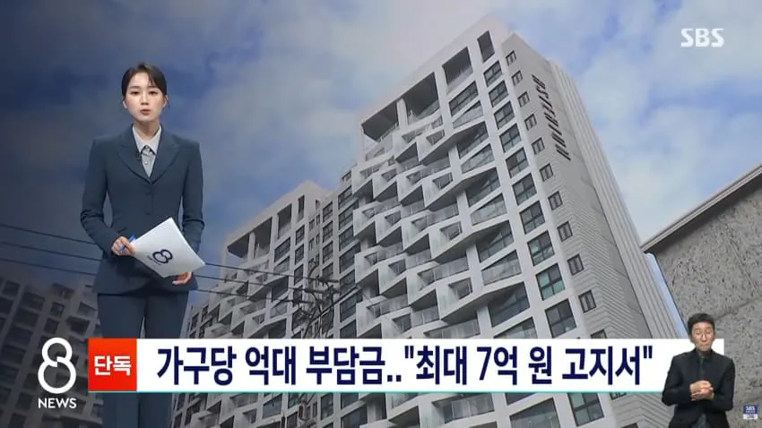
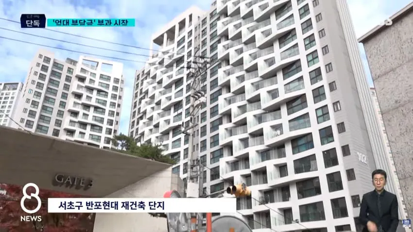
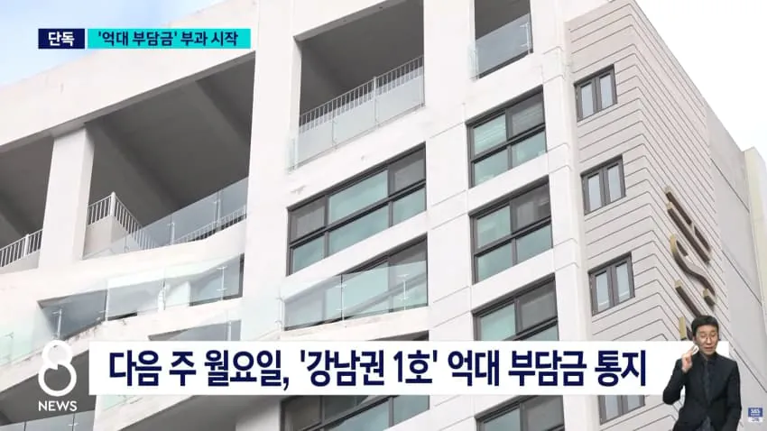
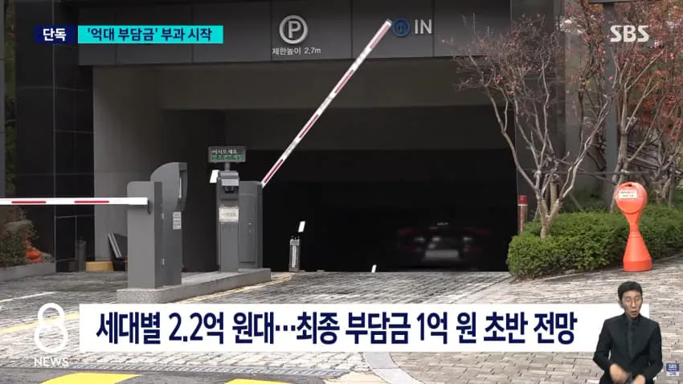
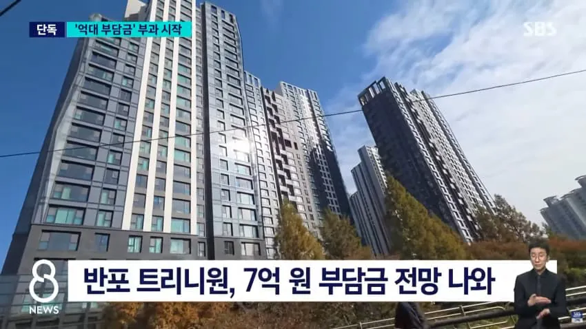
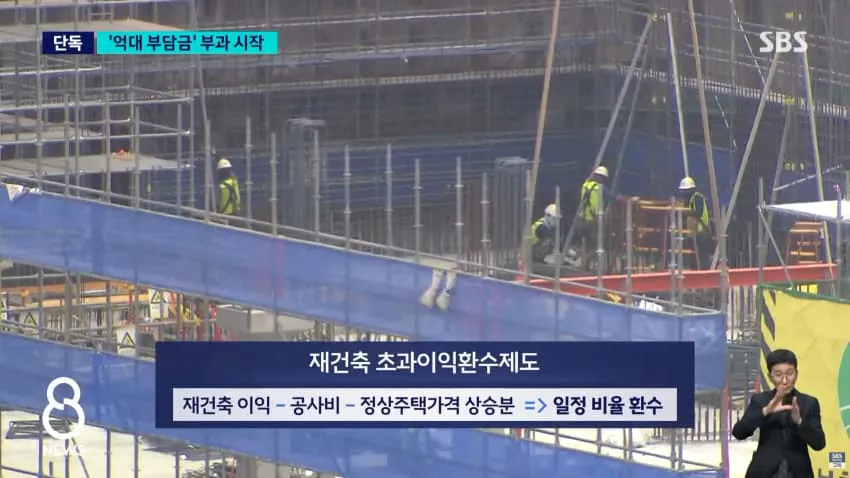
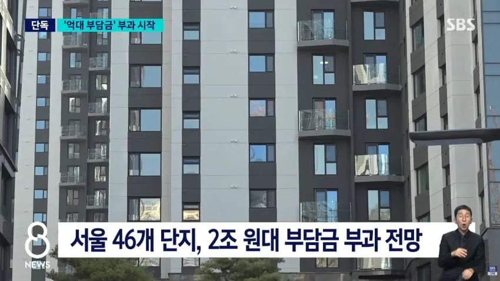

ㄷㄷ







ㄷㄷ
종부,재산세를 늘리는건 찬성인데 초과이익환수는 무슨개념임?
살때보다 떨어지면 지원금 준대냐? 진짜 개좆같은 짓이네ㅋㅋ
대책을 알려드려요?
팔면 현금이 생깁니다
???: 고향 떠나서 어딜 사느냐 나는 운 좋게 판자촌 시절 강남에 살아서 지금까지 초고속 성장의 혜택을 다 누리면서 지금 20년대에 강남 주민으로서 프라이드를 갖고 사는데 그걸 팔고 서울 딴 데로 가라는 건 용납할 수 없다. 지방은 더더욱 갈 수 없다. 나 = 강남사람이란 아이덴티티를 버리는 것은 죽는 것과 같다
강남 팬다고 좋아하지말고 본질을 처봐라 이제 구축 들어가면 걍 평생 구축에 살아야되는법임
당장 지돈나가는거 아니면 병신같은 정책에도 박수치고 시작하네ㅋㅋㅋㅋㅋㅋ
보유세 높이고 양도세 낮춰서 매물이 계속 돌게해야하는데
보유세도 올리고 양도세도 올리고 초과이익인지 머시기인지도 올리고해버리니 진퇴양난임ㅋㅋㅋㅋㅋㅋ
팔면된다고? 팔면 양도차액의 90% 가까이 세금으로 나갈 수도 있음
복비에 기타 부대비용이면 팔면 사실 남는 게 없음ㅋㅋㅋ
남는 게 없는데 사람들이 팔겠냐?
정권 바뀌길 이악물고 버티는 거지
만약 남더라도 세금으로 ㅈㄴ 뜯어가니
아득바득 버티는 거임
그러다보니 매물이 잠기고 수요는 폭증이니 폭등장임
정책이 너덜너덜 걸레짝이라 ㅋㅋ
애들이 병신 빡대가리 천지라 그냥 능력안되면 이사가라는 애들 여기도 수두룩함...문제의 본질은 주택공급 수요를 충족시키냐 못하느냐가 문제인건데
그냥 저런데 살정도는 안되고
그저 열등감을 무식으로 포장해서 혐오로 쏟아내는중
근데 재건축 심사하고 찬반투표할때 저거 알고 찬성한거 아녔어? 왜 찬성으로 가결되서 재건축을 시행하려고 하니깐 갑자기 돈 내기 싫다고 하는거야? 이게 싫으면 재건축반대하면 되는거 아녀? 막 건물이 낡아서 가장 최하등급 받고 위험해서 시급하게 해야되는상황도 아니잖아?
재건축은 보통 몇십년 걸림 근데 정권따라서 부과를 유예해주기도 하고 안하기도 함
그럼 그런 패널티를 알고했다는거네
이러면 재건축 누가함
공.산.국.가.
서울아파트 정훈교육단 어디갔냐? ㅋㅋㅋㅋㅋ
법적으로 정해둔 이익 상한선이 있나??
나라꼬라지 ㅋㅋㅋ
초과이익이란 말이 존나 기괴함ㅋㅋ
그러니까..내집을 부시고 다시 지었는데..집 가격이 올랐으니까 그 돈을 나라가 뜯어간다???
아니 저게 언제생긴건데?
좀 오래 됐다며?
재건축할때 저런거 생각안하고
막하진 않을꺼 아니야
근데 팔때 내자는 말은 진짜
맞는말인듯
가격이 오른 상태에서 보유하고 있으면 보유하는 기간 동안 재산세/종부세를 더 내게 되어 있고, 가격이 오른 상태에서 매도하면 매도하는 시점 양도세를 더 내게 되어 있는데, 그냥 재건축 아파트를 보유했단 이유 만으로 1~7억을 내라는건 그냥 재건축 싫으니깐 하지 말라고 만든 법안 밖에 더됨? (사실 그래서 만들어진 법안이 맞긴 하지만..)
돈 없으면 서울 살지 말라던 게 서울 자가러들 논리 아니냐? 그 말대로 해주고 있는데 뭐가 문제?
초과이익 같은 소리하네 그럼 재건축으로 이득못보면 채워주기라도 하냐
자기 투자니까 자기가 감당해야지
못버티겠으면 지방가라~ (전세거지들한테 맨날하던소리)
어떻게든 돈을 뺏을생각만하네
서울 집값을 잡으려는데 원인을 들여다보질 않고
정책만 남발해대니 부작용이 오는거지
????
칼은 원래 위에서부터 겨눔.
위에 있는 사람들이 다 정리되면 그다음은 그 밑에 있는 사람들임.
지금 박수 치는 사람들은 자기가 칼을 쥔 쪽이라고 착각하는데 칼은 정부가 쥐고 있고 국민은 줄 서 있는 쪽임.
칼은 한 번 뽑히면 다시 안 들어감.
기준선은 계속 내려오고 언젠가는 보편적인 세금으로 나한테도 돌아올 거임.
집 없다고? 평생 그렇게 살면 될 듯.
팔고 나가쇼
돈없는 사람들은 평생 이사다니면서 온동네방네를 돌아다니면서 살아가는데 돈있는사람들은 자기들이 살아왔던걸 누려야하니까 평생 거기서 살아야한다라..
최소한 저 집 팔아서 이득 현실화 했을때 내놔라 해야맞는거 아님??
보유세, 양도세 - 그래, 재산세 개념으로 보유세 내고 이익 본만큼 양도세 내는거지
재초환 - 취득세 내고, 보유세도 내왔지만 재건축으로 집값이 올랐어? 그럼 넌 돈 더 내놔
그냥 세금 징수 더 할게로밖에 안보이는 ㅈ같은 것임
병신나라 ㅋㅋㅋ 부자조지고 서민조지고 중산층 조지고 그지새끼들만 좋아죽는 나라 ㅋㅋㅋㅋㅋ
법안이 06년도에 나오고. 금융위기 때 중단됐다가 18년도에 다시 부활하고.
저기 반포는 20년 9월에 통보된거고
21년도 12월에는 성수동 장미아파트
22년 7월에 용산구 한강맨션이 통보된거네
ㅡㅡㅡ
• 부과 기준: 조합원 1인당 평균 이익이 8,000만 원을 초과하는 경우, 초과 금액에 대해 10%~50%의 누진세율로 부담금을 부과합니다.
• 이익 산정 기간: 재건축 사업의 시작점인 조합설립인가일부터 완료 시점인 준공인가일까지입니다.
• 산식: 초과이익 = 준공 시점 주택가격 - (조합설립 시점 가격 + 정상 주택가격 상승분 + 개발비용)
ㅡㅡㅡ
라고 함.
오늘 처음 알게된 법이라 꺼무위키 좀 봤는데. 집값 막는데 ㅈ도 의미 없는 법안 아닌가?
강남부자 때려잡는다고 좋아하는 빡대가리들아
저 사람들 집 다 판다고 니네가 살 기회 절대 안온다
오히려 자본 더 빵빵한 부자들 아가리에 들어가는거다
강남부자 패는거같아서 신나서 발기함 ㅋㅋ